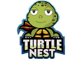 Turtle Nest Turtle Nest 是漂浮在以太坊区块链上的 10,000 个独家 NFT 的集合。四次发射，每次发射 2,500 只，您将有机会潜入海龟之海，并成为更大的慈善事业的一部分。一半的利润将使海
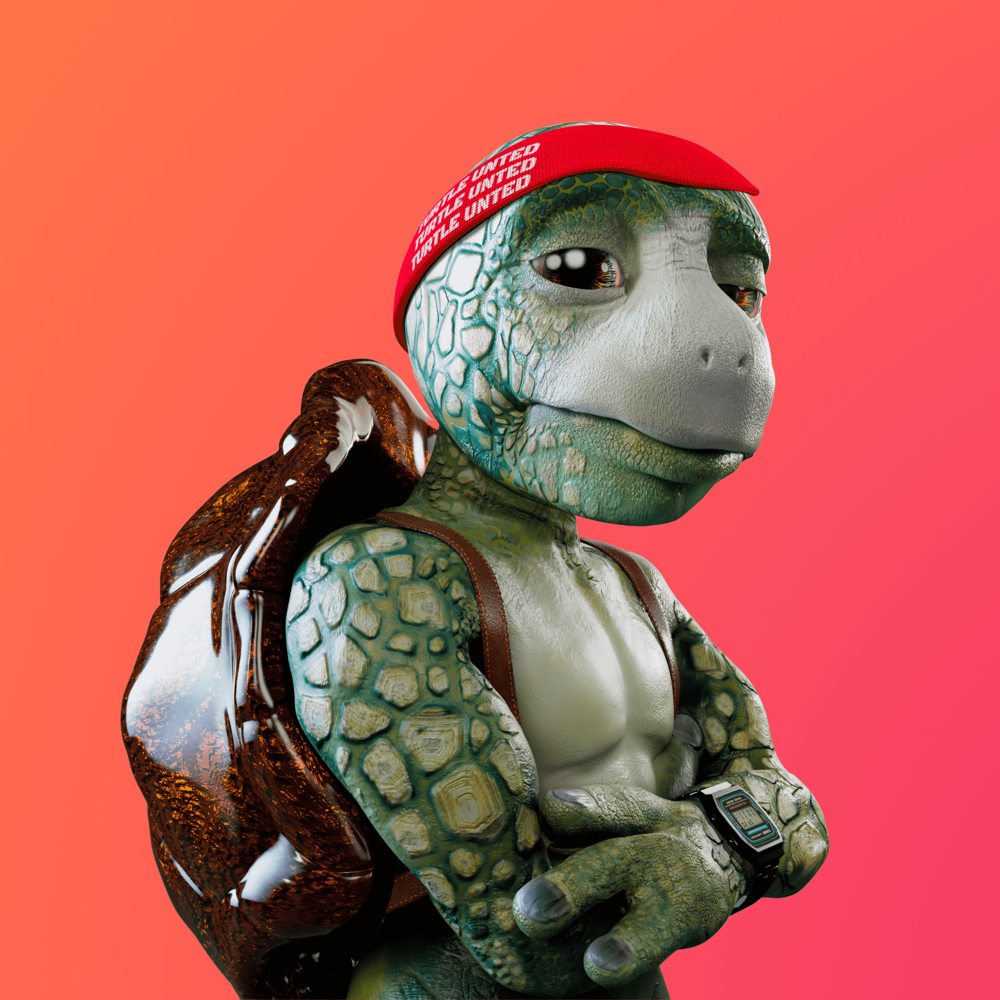 TURTLE UNITED GENESIS COLLECTION 以 web3 上第一个也是最大的影响驱动运动而闻名。Turtle United Genesis 由 500 个 3D 设计的 NFT 的有限集合组成，这些 NFT 具有独特的特征和颜色。 在强大社区的支持下，我
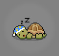 TurtleMoons Turtle Moons 是月球上 6666 只海龟的集合。这是 100% 纯艺术收藏品。Turtle Moons NFT 是以太坊区块链上 6666 个独特且随机自动生成的海龟的集合。 我们的核心开发团队都为世
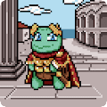 TurtleVerse Official TurtleVerse 是生活在以太坊区块链上的 3333 只海龟的集合。在暴露于放射性能量之后，海龟们开始生产 $ALGAE，并很快意识到他们能够将自己的力量提升到新的高度
Tushi Pals 欢迎来到 Tushi Pals 的世界。4444 Tushis 的非二元物种在以太坊区块链上几乎所有人口都在吞噬他们星球的黑暗虚空中幸存下来。Metastone 的力量使 Tushi Pals 成
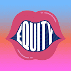 Tuttle Tribe Tuttle 部落是 3,050 个 NFT 的集合。为了向迈阿密的母亲 Julia Tuttle 致敬，我们向美国唯一一个由女性创建的主要城市致敬。NFT 作为 Web3 Equity 教育社区的会员通行证，包括免费的
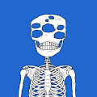 Tweaks Genesis Tweak 系列。100 个手绘调整，每个调整都有自己独特的故事来代表人类的斗争。100 个调整将仍然是调整宇宙的支柱。 生成的[Twisted Tweak 集合])
Twisted Tweaks 一个 Twisted Tweaks 家族，从最初的 100 个 Tweaks 解构和重建。每个 Twisted Tweak 都是完全独特的，源于 100 个具有自己故事的角色来代表人类的斗争。 每个 Twisted Tweak 都体现了爱的精神和积极的
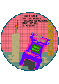 TwistedVacancy Collectibles Twisted Vacancy 是一位印度尼西亚艺术家，他通过插图和动态图形与复杂的对象和超现实主义的方法分享他的想法，这些方法包裹在身临其境的色彩组合中。 Twisted Vacan
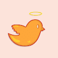 Twitterbirds (Official) 为了庆祝 @elonmusk 成功收购 Twitter，我们在以太坊上铸造了 3,333 只 twitterbirds nft 来纪念这一历史性时刻，只是 meme！ LFG！！ 推特鸟（官方）NFT - 常见问题（
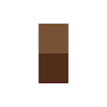 Two Bit Bears Generation Two 购买前请阅读——每只第 2 代熊只能繁殖一次。 在购买售后市场的熊之前，请在此处查看熊的繁殖状态。 你也可以在这里领养一只新鲜的幼崽。第二代双位熊。
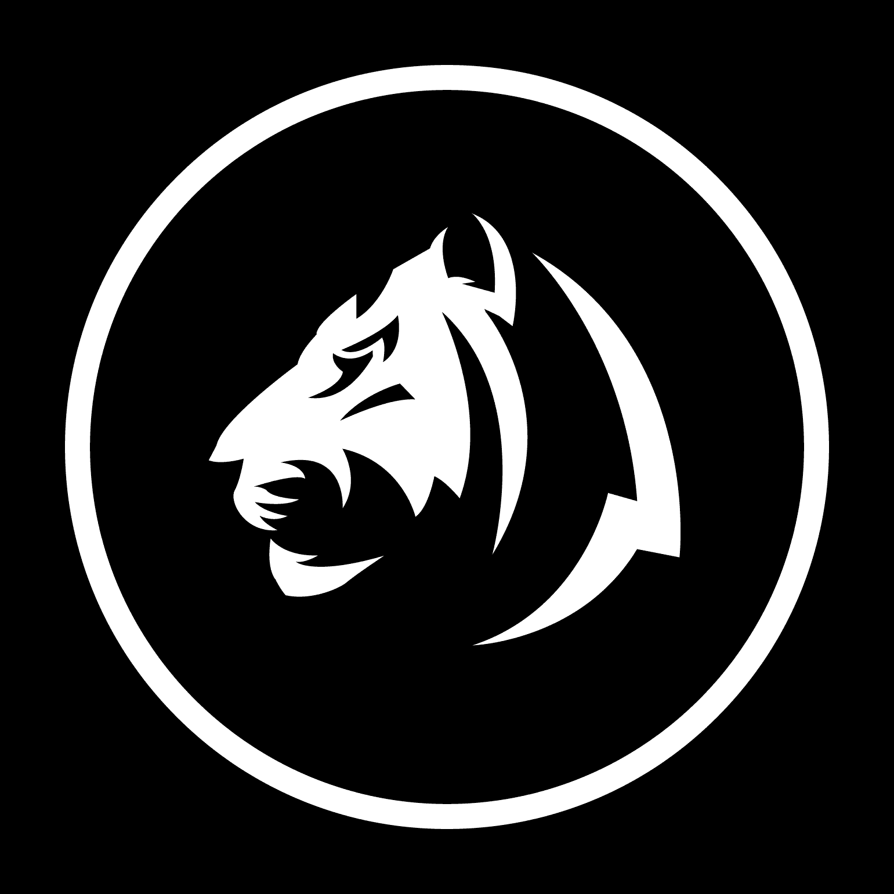 Tycoon Tigers Club Tycoon Tigers 是勤奋的企业家，在区块链上开展业务。 作为一个集合，他们旨在建立最大的 NFT 商业网络社区，并将 web3 的企业家和投资者聚集在一起。 雄心勃勃的老虎努力
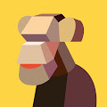 uchida_monkey 这件艺术品是由日本虚拟技术诞生的内田猴子制作的。 这个艺术收藏旨在实现既不是 2D 也不是 3D 的不切实际的感知。 uchida_monkey NFT - 常见问题（FAQ） ▶ 什么是 uch
UDMK_Collection_Genesis UnitedMake 创建了一系列独特的电子包。 这些神秘的电子盒子位于世界各地并从世界各地运送，将包含来自 UnitedMake 的特殊资产 - u(nited)-Boxes。拥有这个 NFT
UEHSLightningBunniPups UEHS Lightning Bunni Pups 由 3572 只独特的手绘兔子幼崽组成。 我们所有的项目都为内城青年的康复提供资金。 拯救未来由我们来决定！定价 每只兔子小狗的价格为 .0099 ETH Perks
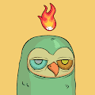 Ugly Birdz.wtf 我们这么丑的原因是我们早餐吃地精。 免费加入丑陋的鸟巢🦉🌲🔔 什么是丑陋的 Birdz.wtf？ Ugly Birdz.wtf 是一个 NFT（Non-fungible toke
Ukiyo Founders Pendant 创始人的吊坠是浮世的创世物品，它将为持有者作为项目的第一批和最独家投资者之一提供大量奖励。 访问 playukiyo.com 了解更多详情。 Ukiyo Founders Pendant 的总销售额为 365.57 美元。 Ukiyo Founders
Ukrainian Friends Task Force 乌克兰朋友特别工作组是一个独特的 3333 个 NFT 集合，旨在支持乌克兰战争造成的人道主义紧急情况。该集合在 Polygon 区块链上发布，可以通过加密或购买一个或多个 NFT
Ultraviolet Vinyl Collection by 3LAU 3LAU 的 Ultraviolet Vinyl Collection 庆祝他在 2018 年发行的首张专辑 3 周年，迄今已获得超过 1 亿的流媒体播放量。 这张专辑捕捉到了数字驱动的社会关系不可避免的孤独感，而原始艺术
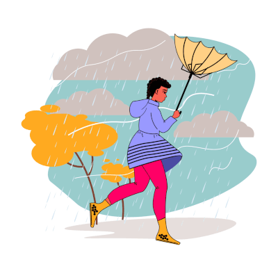 Umbrella Academy NFT Umbrella Academy 是来自 Alpha Passion 社区的 1K degen 系列。 高质量的艺术，没有机器人，没有路线图，没有不和谐，真正的社区。 加入我们的社区并从我们所有的项目中获得免费薄荷糖
Umbrella Network 欢迎来到 OpenSea 上的 Umbrella Network 之家。 发现这个系列中最好的项目。 Umbrella是第一个真正分散的oracle服务，为智能合约提供低成本，大规模可扩展和安
Umeko Space Colony NFT Umeko Space Colony NFT 已经开始庆祝外星太空朋友和地球人之间的互动。 该项目将在多链中开发，仅在所有链中发布总共 10,013 个 NFT。 持有者可以获得代币、NFT 空投和参
UMI Digital Umi DeFi NFT Collection 提供各种 NFT，可以与基于 Ethereum、Sora、Polkadot、Matic 和 Binance 智能链的 Umi Digital DeFi Farming dapp 中的其他加密资产一起质押。 一
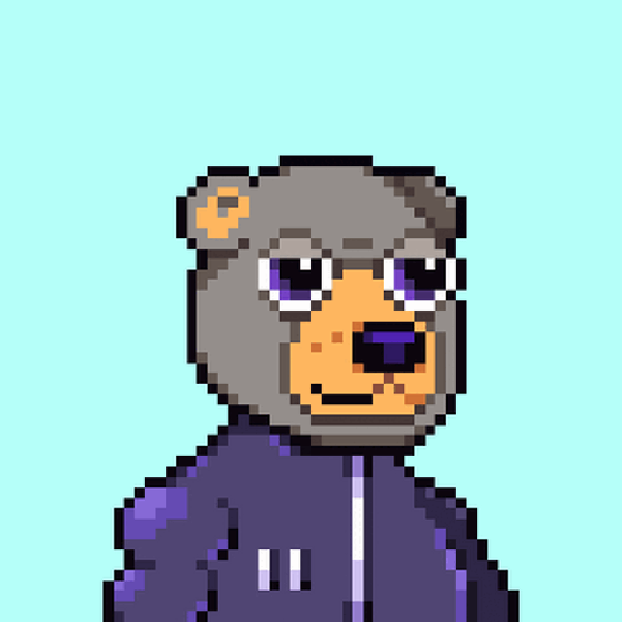 unBEARable Bears | OFFICIAL 承载文化💫🐻 3000只熊熊大合集 难以忍受的熊 | 官方 NFT - 常见问题（FAQ） ▶ 什么是无法忍受的熊 | 官方的？ 难以忍受的熊 | OFFICIAL 是一个 NFT（非同质代
Undead Ape Society Official OS 集合了2000只亡灵猿从死里复活！ 拥有超过 200 种手绘特征和数十亿种可能的组合，该系列中的每只亡灵猿都是真正独一无二的。一场战争即将来临。 这里是
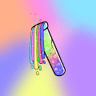 Undead Elixirs Undead Elixirs 是一组用于将 Undead Pastel Club NFT 变异为 Mutant Pastel Club NFT 的长生不老药。 该系列分为三个不同的等级：E1、E2 和 Mega 等级。 不死粉彩俱乐部 不死粉彩俱乐部是9，999只
Under The Wicked Moon 社区的免费收藏，由唯一的@Zach Winterton 策划，供骷髅庆祝和分享。 在我们一周岁生日前几周发布，这整个荣誉系列是关于我们感谢让我们来到这里的人们。 新
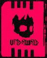 UNDRWRLD by Zenoyis 欢迎来到冥界。 Zenoyis 的 UNDRWRLD 是什么？ Zenoyis 的 UNDRWRLD 是一个 NFT（不可替代令牌）集合。存储在区块链上的数字艺术品集合。 ▶ Zenoyis 代币的UNDRWRLD 有多少？ Zenoyis NFT 总
Unicorn GG Club Unicorn GG Club 是来自 GG（又名“Good Game”）俱乐部的 9000 只精美绘制的独角兽的生成集合。 以太坊区块链上的 3333 GG 独角兽🦄🌈 Unicorn GG Club NFT - 常见问题（FAQ
Unicorn Mantra 以太坊区块链上的1111独角兽咒腾跃| CC0因为我们都是独特而神奇的。 Unicorn Mantra NFT - 常见问题（FAQ） ▶ 什么是独角兽咒？ Unicorn Mantra 是一个 NFT（不可替代
Unicult Shadow Edition Unicult NFT 收藏品是全新的 11938 在以太坊区块链上以编程方式生成的独特独角兽 NFT。 该系列将作为一个序列发布，其中包括 1938 个 NFT 的初始影子版掉落和 10,000 个 NFT 的物质
Unifriends Item Shop 经过 UnifriendsNFTO官方 Uni Bridge 访问项目允许合作项目获得 UNIVRS 奖励并参与我们的生态系统，而无需拥有 Unifriends。每个合作伙伴项目
Unifriends NFT Official 3,333 个生成独角兽 NFT 140 种独特特征，包括皮肤、头发、角、可穿戴设备、物品、背景和眼镜的变化！ 10 个在游戏中具有特殊能力的传奇 1/1 Unifriends。
Uniqly Collections 兑换如何运作？ 获取可穿戴 3.0 Mint Wearable 3.0 - 我们的商店和掉落物之一中的 phygital 时尚代币，所有世界都可用。 一站式接收 浏览可用空间并兑换它们以在物理世界、多个虚
Unique Glass NFT (Polygon) 关于独特玻璃 NFT 可赎回和不可赎回的玻璃代币 UniqueGlassNFT.com 在多个系列版本中提供有价值的、可交易的玻璃模型 NFT。购买 UGNFT 代币提供了数字艺术包的所有权，其中包括
Unisex Apes 经过 Creator_UnisexApes Unisex Apes 是生活在多边形网络上的 6666 个随机生成的集合。每个中性猿都是独一无二的，具有各种特殊特征。不隶属于 Yuga 实验室。 中性猿统计 创建于 5 个月前 6,666
Uniswap V3 Positions 什么是 Uniswap 协议？ Uniswap 协议是一种开源协议，用于在以太坊上提供流动性和交易 ERC20 代币。它消除了受信任的中介机构和不必要的租金提取形式，从而实现了安全、可
United Punks Union 什么是联合朋克联盟？ United Punks Union 是NFT，它拥有ERC721验证智能合约。我们为所有人提供平等的公平分配价格。United Punks Union 是手工设计的，但在以
Universe: Paco Rabanne 宇宙：Paco Rabanne 统计 创建于 4 个月前 11 代币供应 10% 费用 没有 Universe：Paco Rabanne 在过去 7 天内售出。 Paco Rabanne 将过去 7 年中 12 款最具标志性的档案高级
UNKNOWN - 2099 未知 - 2099 NFT - 常见问题（FAQ） ▶ 什么是 UNKNOWN - 2099？ UNKNOWN - 2099 是一个 NFT（不可替代令牌）集合。存储在区块链上的数字艺术品集合。 ▶ 存在多少 UNKNOWN - 2099
UNlEASHED BOSS GENESIS 关于 UNLEASHED PLATINUM 铂金是一种贵金属，象征着耐用性、纯度和在我们社会中的崇高地位。Unleashed Platinum是一个渴望已久的项目，终于准备好发布